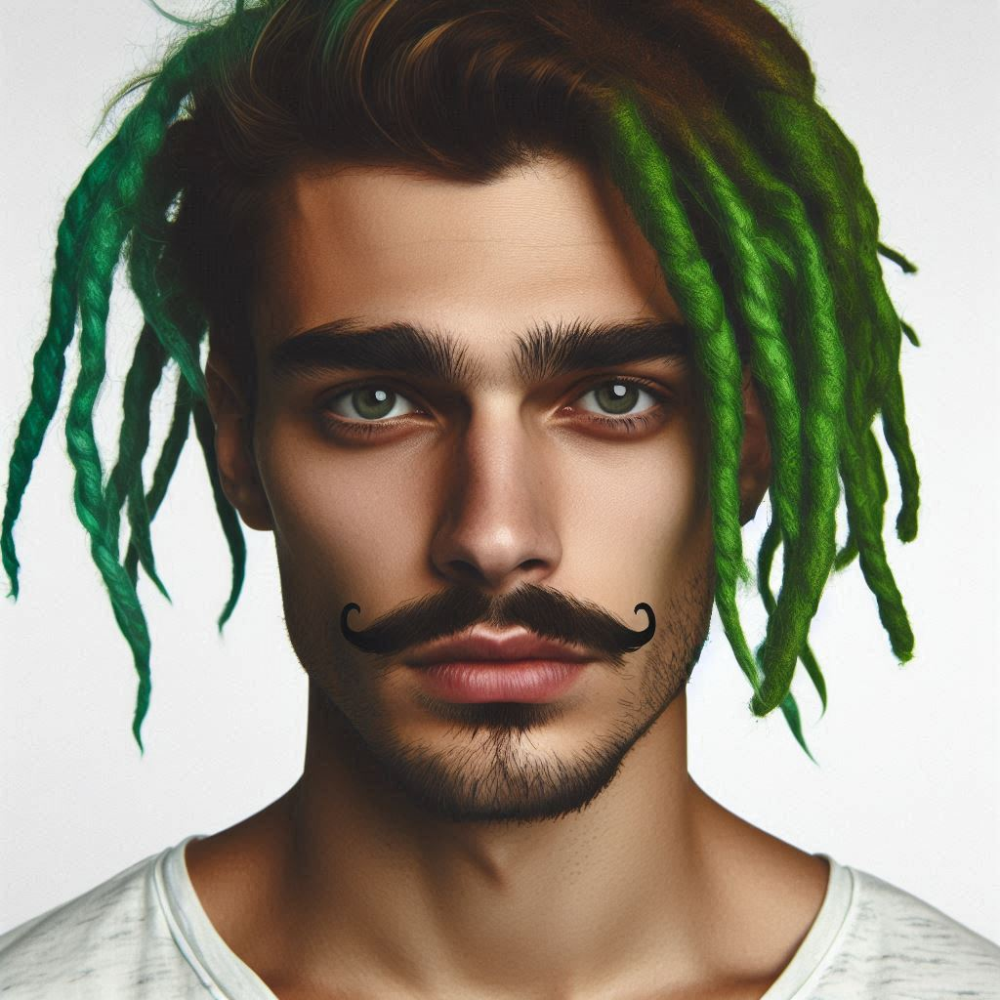
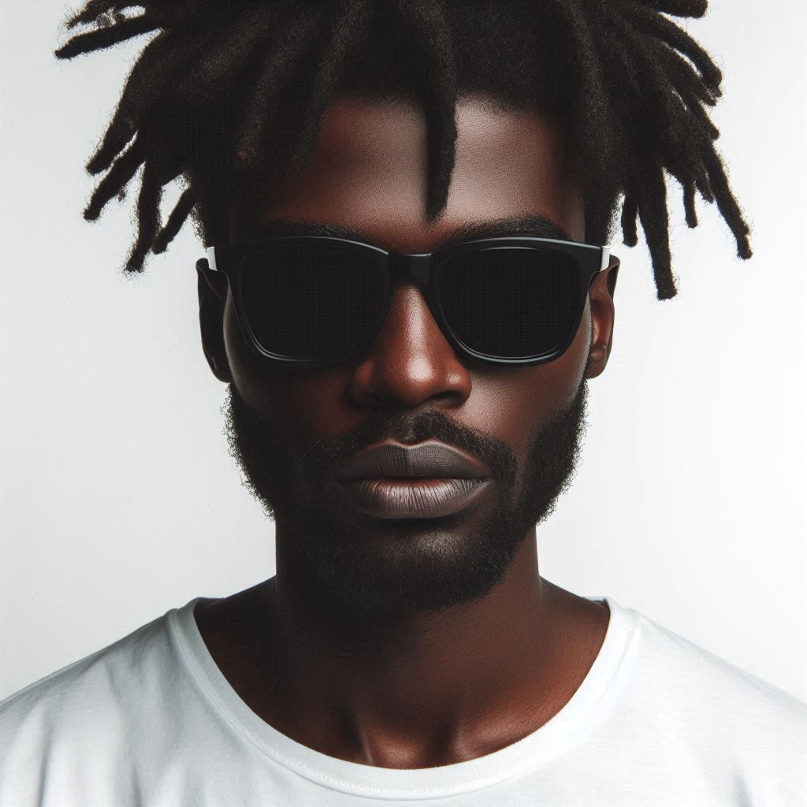
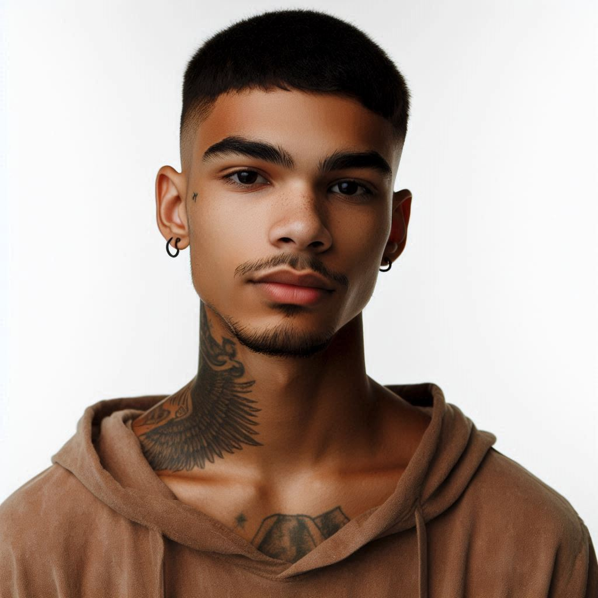
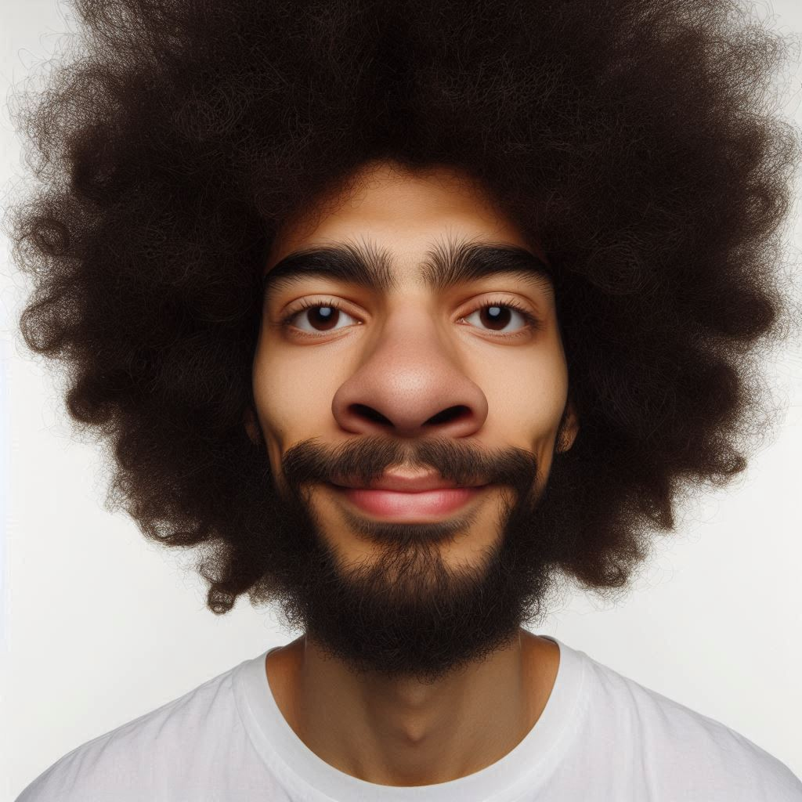
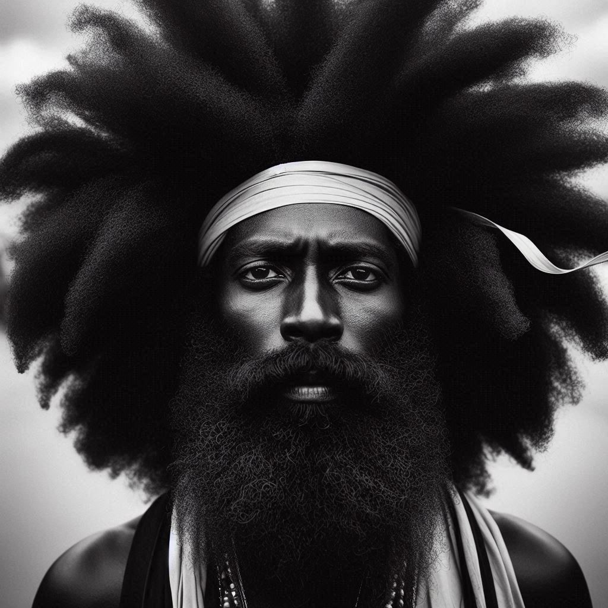

<style>
   

/* Plantilla de jugadores */
.players {
    display: grid;
    grid-template-columns: repeat(auto-fill, minmax(180px, 1fr));
    gap: 15px;
    padding: 10px;
}

/* Tarjetas de jugadores */
.player-card {
    background: #ecf0f1;
    padding: 15px;
    border-radius: 8px;
    text-align: center;
    border: 2px solid #ddd;
    transition: transform 0.3s, background 0.3s;
}

.player-card img {
    width: 100px;
    height: 100px;
    border-radius: 50%;
}

.player-card:hover {
    background: #bdc3c7;
    transform: scale(1.05);
}
</style>

<section class="plantilla">
            <h2>Plantilla destcada</h2>
            <div class="players">
                <div class="player-card">
                    
                    <h3>Patividis</h3>
                    <p>Delantero</p>
                </div>
                <div class="player-card">
                    
                    <h3>Indalecio</h3>
                    <p>Media punta</p>
                </div>
                <div class="player-card">
                    
                    <h3>El fary</h3>
                    <p>Extremo derecho</p>
                </div>
                <div class="player-card">
                    
                    <h3>Popeyes</h3>
                    <p>Mediocentro</p>
                </div>
                <div class="player-card">
              
                    <h3>Joao Pedro</h3>
                    <p>Extremo derecho</p>
                </div>
              
                <div class="player-card">
                    
                    <h3>Narizón</h3>
                    <p>Defensa central</p>
                </div>
             
              <div class="player-card">
          
                    <h3>Jesucristo Garcia</h3>
                    <p>Portero</p>
                </div>
              
                <div class="player-card">
                    
                    <h3>Aspavientos</h3>
                    <p>Lateral derecho</p>
                </div>
               <div class="player-card">
          
                    <h3>Gueterres</h3>
                    <p>Extremo izquierdo</p>
                </div>
              
        </section>
